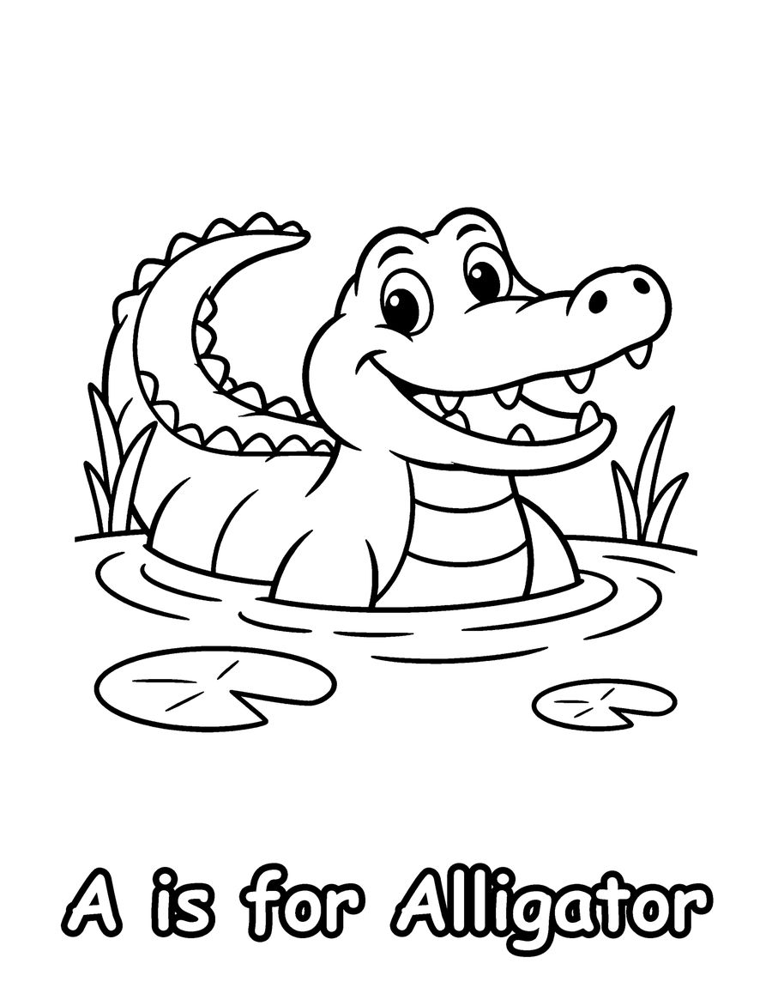
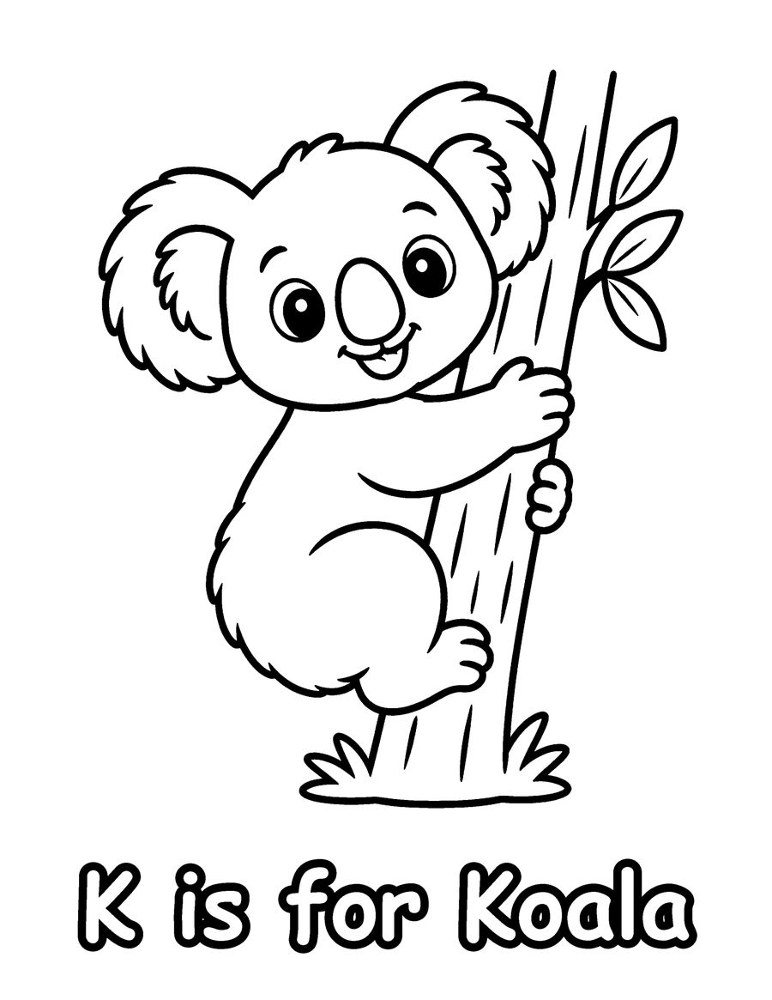
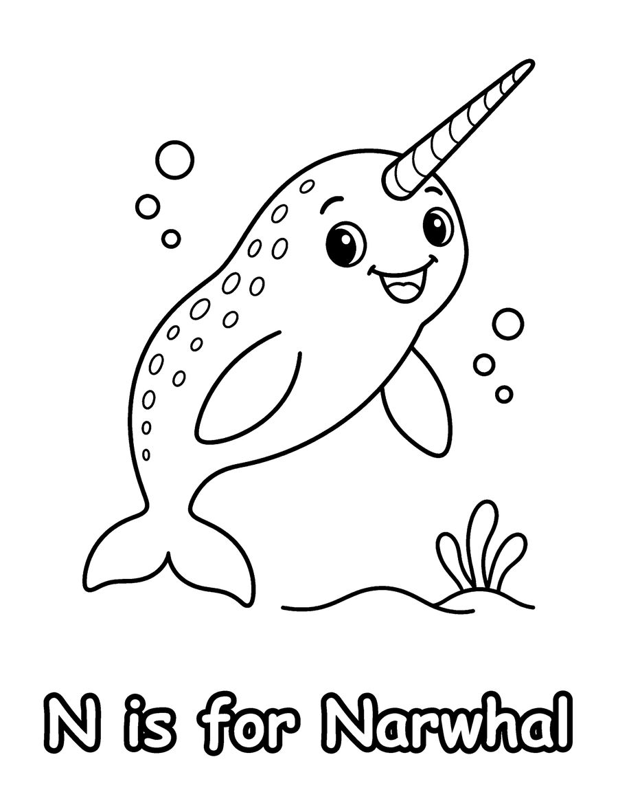

These free ABC animal coloring pages help young children connect letters with animals they love. They come from ABC Animal Friends, an alphabet coloring book for ages 3 to 6 with one cute animal for every letter from A to Z. Your free set has A is for Alligator, K is for Koala and N is for Narwhal.
Each page has one big, friendly animal with thick outlines and large areas, so preschoolers can color without getting frustrated. As you color together, say the letter, its sound and the animal name out loud, then look for the same letter in books, signs and names around the house. Pages like these fit nicely into a letter of the week routine, a kindergarten center or a homeschool morning. Print on US Letter paper at 100% scale and use chunky crayons or washable markers. The complete book has 26 animals, from Quail to Zebra, with a surprise X-ray fish for the tricky letter X.
Your 3 free coloring pages

K is for Koala
Download free page (PDF)
N is for Narwhal
Download free page (PDF)Printing tips
- Print at 100% scale on US Letter (8.5 x 11 in) paper. For A4, choose “Fit to page”.
- Use heavier paper (65 lb / 120 gsm or more) if you color with markers, so ink does not bleed through.
- Download the PDF first, then print from your PDF viewer for the sharpest lines.
Get all 26 pages
These 3 pages are a taste of ABC Animal Friends (Kids 3-6). The full coloring book has 26 pages, ready to print or color in a book.
More free coloring pages

Free Animal Coloring Pages for Preschoolers
Kids 3-6

Free What Animals Eat Coloring Pages
Kids 3-6

Free Dinosaur Coloring Pages for Kids
Kids 3-6

Free Koala Coloring Pages for Kids
Kids 6-12